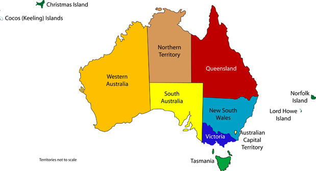

Australia’s states and territories
The Commonwealth of Australia is a federation of states and territories. There are six states and two mainland territories. Canberra is Australia’s capital city, and each state and mainland territory has its own capital.

| State |
Capital city |
| New South Wales (NSW) |
Sydney |
| Victoria (Vic.) |
Melbourne |
| Queensland (Qld) |
Brisbane |
| Western Australia (WA) |
Perth |
| South Australia (SA) |
Adelaide |
| Tasmania (Tas.) |
Hobart |
| Territory |
Capital city |
| Australian Capital Territory (ACT) |
Canberra |
| Northern Territory (NT) |
Darwin |
Canberra is also Australia’s capital city
The states
The territories